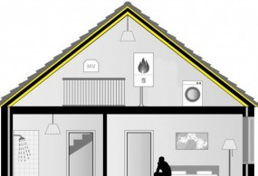

Eco-Baffles van VRK
Eco-Baffles bestaan voor 85% uit gerecycled textiel. De vulling van de baffles is Metisse isolatie. Metisse wordt gemaakt van ingezamelde, niet herdraagbare kleding. Dit is voornamelijk katoen. Deze niet herdraagbare kleding ging vroeger naar de verbrandingsoven. Door deze kleding te vervezelen zijn we nu in staat om er nieuwe producten van te maken die hoge thermische en akoestische eigenschappen bezitten. Eco-Baffles zijn speciaal ontworpen om op een esthetische manier grote ruimtes te ontdoen van die hinderlijk nagalm. Of het nu gaat om een sporthal, zwembad, kantoorruimte, theater of fabriekshal, deze baffles reduceren de nagalm tot een aanvaardbaar niveau.
| Toepassing | Boven/onderzijde vloer/wand/dak, hout of beton |
| Materiaal | Textiel |
| Doe-het-zelf | Zelf te doen |
| Subsidie | Niet voor woningeigenaren, wel voor VvE’s |
Vergelijk meer producten
Dakisolatie
Platdakisolatie IKO EnerthermGeluid
Binnenwandsysteem HV70 Van FaayEco-Baffles Van VRK
Geluidisolatie Isolgomma Van Imbema
Gevel
BuitenisolatiegevelHoutvezelisolatie Van Gutex
Isolatie Isovlas PL Plaat
Spouwisolatie HR++ Neopixels EPS Parels
Glas
Glasfolie van HomechillHR++ Isolatieglas
Renovatieglas en Kozijnen
Vloer
Bodem afsluiting KalkkorrelsReflectiefolie Tonzon